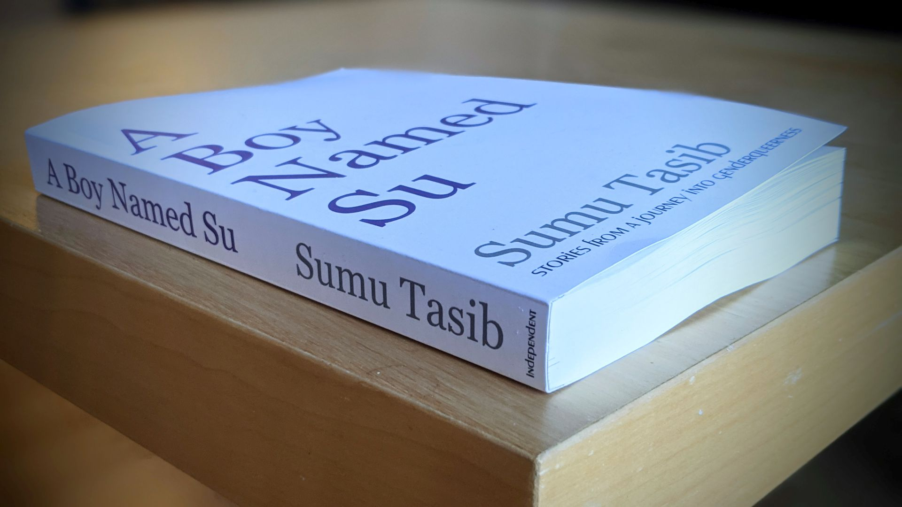

A Boy Named Su: Stories from a Journey into Genderqueerness
Where to Get It
A Boy Named Su is available in print and online at the following locations:
- Elliott Bay Books - the premier independent bookstore in Seattle, Washington
- Amazon - available worldwide with rapid shipping
- Medium - a free version of the book with no paywall limits
- goodreads - reviews and links for adding the book to your reading list
About the Book
A genderqueer journey through a gender-binary world, A Boy Named Su traces the footsteps of the author's confusion, shame, and eventual embrace of his sexuality and gender identity. Told through a series of deeply personal stories and essays, the book introduces us to a wide variety of experiences, friends, lovers, and partners that shaped the author's perspective. With meticulous attention to detail, coupled with the perspective of time, the stories weave together a rich tapestry of personal discovery and self-acceptance.
Tasib's book is intended for anyone who is on the journey of understanding their own sexuality and gender identity, in the hopes that it may help them see that they are not alone in their struggle. It illustrates the powerful interdependence of perspective and experience, showing that stories which feel shameful or tragic today might unlock a door to joy tomorrow. In its moments of reflection, each chapter invites the reader to reconsider their own stories, to join the author in compassionately gathering a lifetime of thoughts and moments into a coherent portrait of all that they have become.
content warning: as these stories address sexual discovery, some chapters contain graphic descriptions of intimate situations; please read with caution if you are sensitive to such material.
Book Details
Full Title: A Boy Named Su: Stories from a Journey into Genderqueerness
Length: 320 pages
ISBN-13: 9798571858229
Publication Date: November 14, 2020
Publisher: Independent
Review Excerpts (from goodreads)
"This is a brilliantly written book that you will not want to put down, and its a book that I cannot recommend enough for anyone questioning the binary constraints that have been imposed on our sexuality and gender identity." --Maria
"If you've ever wondered what it's like to be genderqueer and the journey of self-discovery that it takes to get there, this is the book for you. " --Liz L.
"It's well written and thought provoking. I found myself thinking about the story and talking with others about it long after I'd finished reading." --Corey S.
"Even if people don’t relate to all of the details, the feelings in all of it are 100% relatable. I’m touched, and I think the author’s words and unguarded sharing of his personally intimate thoughts and experiences are going to help a whole lot of people feel better about being who and how they are, too." --Dawn B.
About the Author
See Sumu Tasib's bio to learn more about the author and how to contact them.